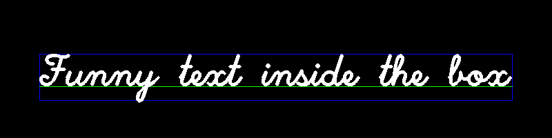

Draw text demo
Demonstration of text drawing functions
Contents
Text Parameters
txt = 'Funny text inside the box'; fontFace = 'HersheyScriptSimplex'; fontScale = 2; thickness = 3; img = zeros(200,800,3, 'uint8');
Text Size
compute text size
[textSize,baseline] = cv.getTextSize(txt, 'FontFace',fontFace, ... 'FontScale',fontScale, 'Thickness',thickness); baseline = baseline + thickness;
center the text
textOrg = [size(img,2) - textSize(1), size(img,1) + textSize(2)] ./ 2;
Draw
draw the box
img = cv.rectangle(img, textOrg + [0, baseline], ... textOrg + [textSize(1), -textSize(2)], 'Color',[0,0,255]);
... and the baseline first
img = cv.line(img, textOrg + [0, thickness], ... textOrg + [textSize(1), thickness], 'Color',[0,255,0]);
then put the text itself
img = cv.putText(img, txt, textOrg, 'Color',[255,255,255], ... 'Thickness',thickness, 'FontFace',fontFace, 'FontScale',fontScale);
finally show the resulting image
if mexopencv.isOctave() %HACK: not all IMSHOW options are implemented in Octave imshow(img) else imshow(img, 'InitialMagnification',100, 'Border','tight') end